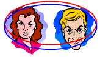

|
Important communications work best when each per-son intentionally maintains a "two-person bubble" of awareness that includes their and their partner's cur-rent feelings + needs + thoughts + reasons for communicating + true-Self symptoms + other relevant factors. Common alternatives are one or both people focusing on (a) only themselves, (b) only the other person, or (c) something else, the past, or the future. Awareness and metatalk skills can help you develop the habit of keeping "two-person" (me + you) awareness bubbles. Are you aware of your and your partner's bubbles in important communications yet? |